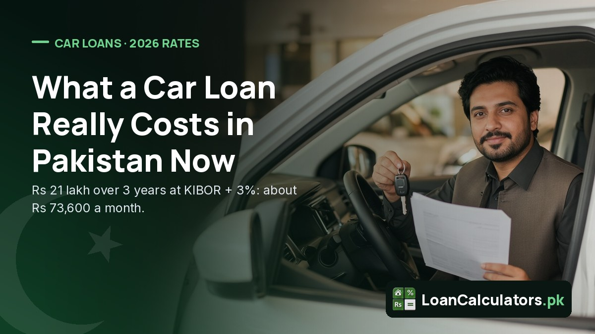
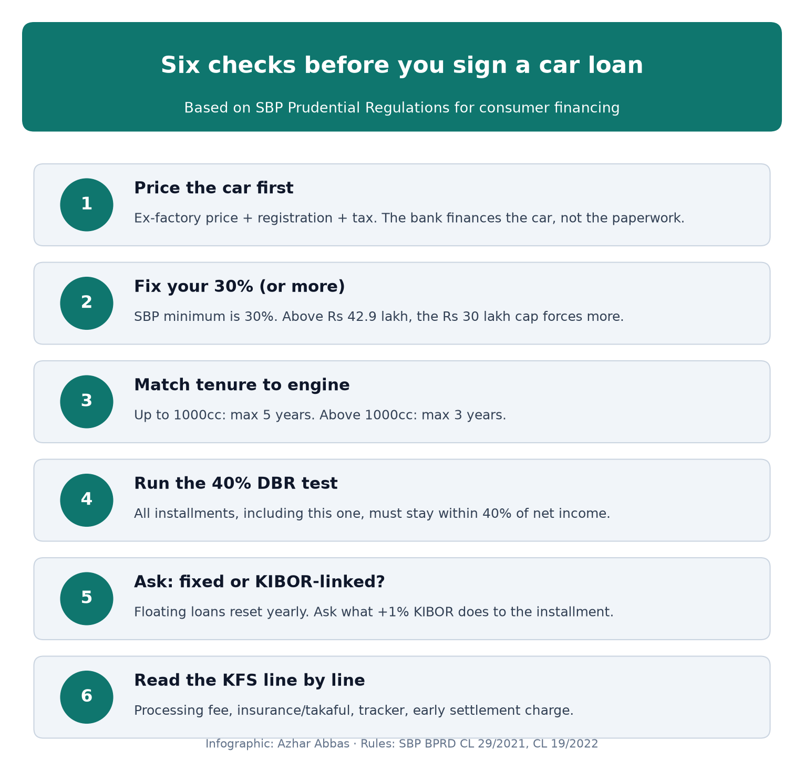
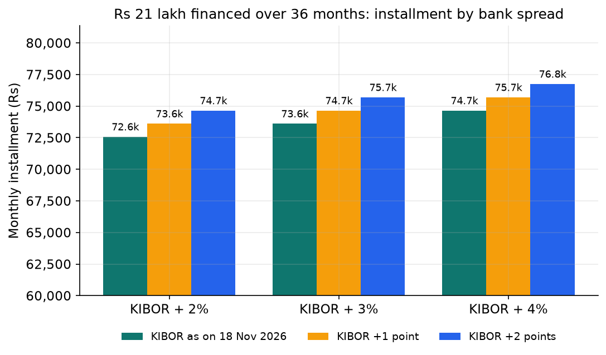
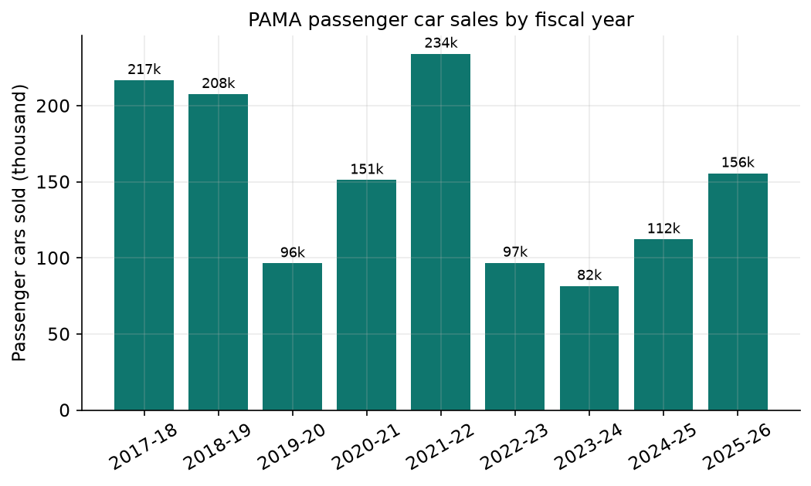

The State Bank raised its policy rate by half a point to 12% on 27 October 2026, and one-year KIBOR closed at 12.79% (offer) on 18 November. If you are about to finance a car, that one number decides most of your monthly bill, because nearly every bank car loan in Pakistan is priced as KIBOR plus a spread.
This guide skips the brochure talk. It walks through what the State Bank's rules allow, what a typical financed car costs per month at today's KIBOR, and which questions save you real money at the branch.

The rules every bank has to follow
Banks can be stricter than the State Bank, but none can be more generous. These are the hard limits under SBP's Prudential Regulations for consumer financing:
| Rule | Limit | Where it comes from |
|---|---|---|
| Minimum down payment | 30% of the vehicle price | BPRD Circular Letter 29 of 2021 |
| Maximum auto financing per person | Rs 3 million across all banks | BPRD Circular Letter 29 of 2021 |
| Debt burden ratio | 40% of net income, all loans counted | BPRD Circular Letter 29 of 2021 |
| Maximum tenure, up to 1000cc | 5 years | BPRD Circular Letter 19 of 2022 |
| Maximum tenure, above 1000cc | 3 years | BPRD Circular Letter 19 of 2022 |
| Imported vehicles | Not eligible for bank financing | BPRD Circular Letter 29 of 2021 |
Two of these interact in a way people miss. The Rs 3 million cap and the 30% minimum together mean that any car priced above about Rs 42.9 lakh needs more than 30% down. On a Rs 60 lakh SUV you put down Rs 30 lakh, not Rs 18 lakh.
What it costs per month at today's KIBOR
The table below uses 1-year KIBOR of 12.79% plus a 3-point spread, which gives 15.79% a year. That spread is an assumption to make the maths concrete; your bank's quote may be higher or lower, and fixed-rate products are priced differently. Insurance, tracker and fees are left out.
| Car price | Down payment | Financed | Months | Monthly installment | Total markup | Net income needed at 40% DBR |
|---|---|---|---|---|---|---|
| Rs 25 lakh | Rs 750,000 | Rs 1,750,000 | 60 | Rs 42,362 | Rs 791,695 | Rs 105,904 |
| Rs 25 lakh | Rs 750,000 | Rs 1,750,000 | 36 | Rs 61,344 | Rs 458,367 | Rs 153,359 |
| Rs 40 lakh | Rs 1,200,000 | Rs 2,800,000 | 36 | Rs 98,150 | Rs 733,387 | Rs 245,374 |
| Rs 60 lakh | Rs 3,000,000 | Rs 3,000,000 | 36 | Rs 105,160 | Rs 785,772 | Rs 262,901 |
| Rs 90 lakh | Rs 6,000,000 | Rs 3,000,000 | 36 | Rs 105,160 | Rs 785,772 | Rs 262,901 |
The last column is the one that surprises people. On a Rs 40 lakh car over three years, a household needs roughly Rs 245,374 a month in take-home pay just to clear the 40% test, and that assumes no other loan or credit card. Banks usually count about 5% of each credit card limit as a monthly obligation even if you pay the card off in full.
How much the spread matters
A one-point difference in spread looks small on a term sheet. On Rs 21 lakh over 36 months, KIBOR + 3% costs Rs 73,612 a month and KIBOR + 4% costs Rs 74,651. That is Rs 1,039 a month, or about Rs 37,411 over the loan.

The chart also shows the second risk: KIBOR itself. Most floating car loans reprice once a year. The policy rate went from 10.5% in December 2025 to 12% by late October 2026, so a loan taken a year ago at the same spread now carries a noticeably higher installment.
Tenure: lower installment, bigger bill
For a Rs 25 lakh hatchback under 1000cc with 30% down (Rs 17.5 lakh financed), here is the trade-off at 15.79%:
| Tenure | Monthly installment | Total markup | Car cost including down payment |
|---|---|---|---|
| 12 months | Rs 158,605 | Rs 153,262 | Rs 2,653,262 |
| 24 months | Rs 85,510 | Rs 302,239 | Rs 2,802,239 |
| 36 months | Rs 61,344 | Rs 458,367 | Rs 2,958,367 |
| 48 months | Rs 49,407 | Rs 621,559 | Rs 3,121,559 |
| 60 months | Rs 42,362 | Rs 791,695 | Rs 3,291,695 |
Five years roughly halves the installment compared with two years but more than doubles the markup. If your DBR allows a shorter term, take it. If it doesn't, the longer tenure is the honest way to make the numbers work, as long as you know what it costs.
Why rates move car sales
Most new cars in Pakistan are bought partly on bank credit, so sales follow the cost of borrowing. Pakistan Automotive Manufacturers Association figures show passenger car sales fell from 234,180 in 2021-22 to 81,579 in 2023-24, the year the policy rate sat at a record 22%. They recovered to 155,631 in 2025-26 as rates came down.

Outstanding auto financing has grown alongside: SBP data shows Rs 407 billion of car and transport loans at the end of September 2026, up about 34% in a year.
Fixed or floating?
A fixed-rate plan costs more on day one but protects you if KIBOR keeps rising, as it did twice in 2026. A KIBOR-linked plan starts cheaper and falls if rates come down. Ask the bank two questions before you choose:
- What is the installment if KIBOR rises 2 points at the first reset? A good officer will run it for you.
- What does early settlement cost? If you expect a bonus or a property sale, a low prepayment charge is worth more than a slightly lower rate.
Islamic options (Ijarah or Diminishing Musharakah) follow the same SBP limits. The rental is often also benchmarked to KIBOR, so the same questions apply.
Costs that are not in the installment
- Insurance or takaful, usually charged yearly on the car's value for the full tenure.
- Tracker installation and annual subscription, which most banks require.
- Processing fee, normally non-refundable even if you are declined.
- Registration, token tax and withholding tax at purchase, which the bank does not finance.
- Late payment charges, which show up on your credit report as well as your statement.
A worked example: one salary, three cars
Take a salaried buyer with Rs 200,000 take-home pay, a credit card with a Rs 200,000 limit and no other loans. The bank will usually count 5% of the card limit, so Rs 10,000 of the 40% allowance is already used. That leaves room for an installment of about Rs 70,000 a month.
At 15.79% over 36 months, Rs 70,000 a month supports roughly Rs 19.97 lakh of financing. With 30% down, that points to a car priced around Rs 28.53 lakh. A 1000cc car can stretch to five years, where the same Rs 70,000 supports about Rs 28.92 lakh of financing, but the Rs 30 lakh per-person cap still applies.
So the same buyer can finance a car up to that price over three years, take a 1000cc car over five years with a lower installment, or close the credit card and free up another Rs 10,000 of room. Cancelling an unused card is often the cheapest way to raise your limit.
Quick answers
Can I put down less than 30%? Not on a bank auto loan. Some dealers advertise lower upfront amounts; read the paperwork, because that is a different product or the gap is being financed some other way.
Does the Rs 30 lakh cap apply per car or per person? Per person, across all banks and DFIs together.
Are electric vehicles treated differently? Locally assembled EVs have followed the same limits since May 2022.
Can I prepay? Yes, but most banks charge an early settlement fee. It must appear in your KFS.
Before you visit the bank
Run your own numbers with a calculator that applies the 30% down payment and the engine-size tenure caps automatically. The car loan calculator and bank comparison on LoanCalculators.pk does this and lists each bank's published pricing basis, so you can walk in knowing what a fair quote looks like.
Then ask for the Key Fact Statement in writing. It must show the rate, every fee and the total amount payable. If a number in it doesn't match what you were told at the counter, the KFS is the one that counts.
Sources
- State Bank of Pakistan, policy rate and KIBOR (18 Nov 2026): https://www.sbp.org.pk/ecodata/rates/msm/MSM-Rates.asp
- SBP BPRD Circular Letter No. 29 of 2021 (consumer finance tightening): https://www.sbp.org.pk/bprd/2021/CL29.htm
- SBP BPRD Circular Letter No. 19 of 2022 (auto finance tenure): https://www.sbp.org.pk/bprd/2022/CL19.htm
- Dawn, "Central bank raises policy rate by 50 basis points to 12pc": https://www.dawn.com/news/2039956
- Pakistan Automotive Manufacturers Association, sales data: https://www.pama.org.pk
- Auto financing at Rs 407bn, September 2026 (SBP data, reported): https://pakbiz.com/pakistans-auto-financing-hits-rs-407-billion-in-september/